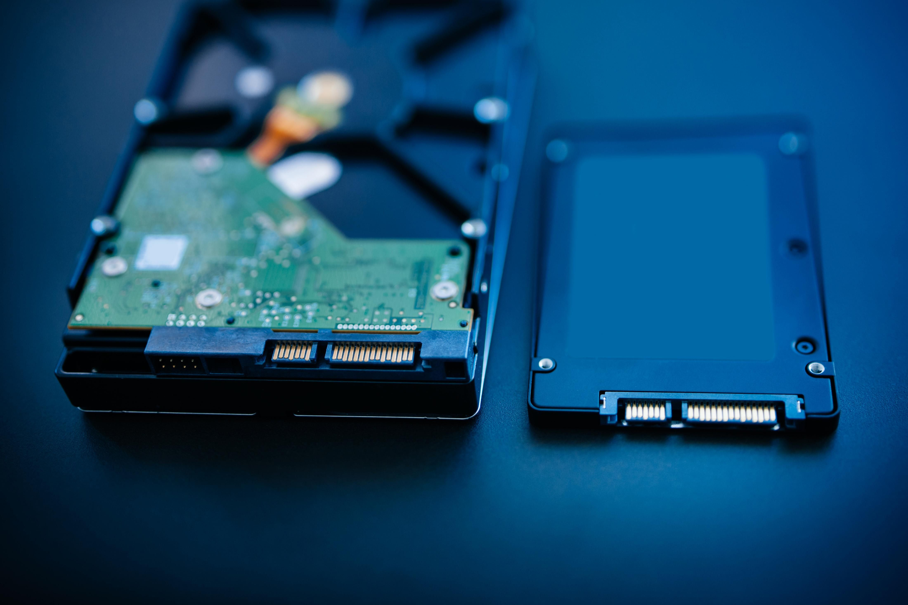

Let's Build a PC!
This is a simple introduction/guide to building your own PC. Be it for gaming,coding,video editing or general purpose, this guide will help you make the first step towards your very own workstation.
Basic Parts
This step can be as hands-on or as hands-off as you like — you can thoroughly research each individual component on your own and create a custom build from scratch, or you can find a pre-made build online and adjust it to suit your specific budget and needs.We definitely recommend coming up with a budget before you start picking components (it's easy for component shopping to get out of hand) — and remember, you can always upgrade individual components later.
Processor

The processor, or Central Processing Unit, is the brain of the PC. It’s what converts the instructions you provide into actions the computer can execute, and tells all the other parts of your build how to work together. If the CPU is the brain, the rest of the system is the body.
The CPU is probably the single most important component for any computer, and as you’d expect there are almost endless options at a variety of price ranges. The two primary manufacturers in the consumer PC space are Intel and AMD, and even within those brands, there are plenty of choices. For AMD you’ll most likely be looking at Ryzen, or Threadripper if you want high-end. Intel’s i designated CPUs are all solid choices, though you’ll probably want to consider an 8th or 9th Gen i5 or i7 if you’re looking to put together a serious gaming or streaming rig.
Graphics Card
The Graphics Processing Unit (GPU) will have the most impact on your gaming experience. The GPU is essentially what allows your computer to do the complex graphics calculations that allow your PC games to look so good. Though many CPUs have integrated graphics, a GPU is absolutely required if you want to have a modern PC gaming experience.
The two biggest players in the world of graphics cards are AMD and Nvidia. Depending on how much you want to invest, you can go with something on the lower-end of modern GPUs, like the GTX 1050 Ti from Nvidia, or the Radeon RX570 from AMD. If you want a cutting-edge experience, Nvidia’s RTX 2080 Ti is the current king of consumer facing GPUs, with the Radeon RX Vega architecture from AMD not far behind.
If you’re looking for the best gaming experience, the GPU might be the priciest component you’ll buy, but you’re not going to want to skimp here, especially if you’re looking to get into gaming at higher resolutions and frame rates.
Memory/RAM
RAM may be one of the most important parts of your computer, but it’s one of the easiest components to pick. 16GB will handle most tasks for the vast majority of people for quite some time, and is a bit of overkill for gaming. If you want to go crazy, get 32 GB.
If you need more than that, you probably don’t need to be reading this guide anyway.
Don’t fret over RAM speed. Anything 2400 Mhz and over is unlikely to bottleneck your performance. Just get whatever seems like the best deal
One point of advice: Buy RAM in pairs. Odd numbers of RAM sticks are often inefficient.
Motherboard
Your computer’s circulatory system, this is probably the component you should spend the most time researching. For one, it’s the most annoying component to replace, since everything connects to it, and you’ll probably have to reinstall your OS if you do.
For another, because it connects to everything, your motherboard also dictates what types of components you can use. Make sure your motherboard has all the features you want, else you might have to buy additional accessories, or miss out on some features altogether. For example, many motherboards don’t include Wi-Fi or Bluetooth on board – yes, even in 2017. Companies expect you to use Ethernet or buy your own wireless card.
USB-C is another one to look out for. The new port has only recently started to be picked up by new motherboards, and many are only the slower USB 3.1 variety, not Thunderbolt 3. You also currently can’t get Thunderbolt 3 on an AMD motherboard.
Lastly, motherboards come in three general sizes: ATX, micro-ATX, and ITX. You’ll probably want an ATX case for your first build. It’s the largest – which means a larger case – but gives you the most flexibility for expansion.
Storage

Storage is where your data is…well, stored, so your PC can access it. This includes files, games, your operating system, any data that you need to access will be kept on a storage drive. In the past, storage mostly consisted of hard disk drives (HDD), but now solid state drives (SSD) are more widely available. SSDs are significantly faster, quieter, and more durable, but also cost more per gigabyte.
The right storage solution will vary, though a common configuration is a smaller NVMe or SATA SSD for your operating system and most commonly used files, and a larger HDD for your larger files. You can also rely on external storage solutions, which have the advantage of being portable.
The Samsung 970 Pro M.2 SSD is one of the most popular solid state solutions, and the 3TB Seagate BarraCuda HDD will work great for larger installations and file storage.
Power Supply Unit
As you probably guessed by the name, the Power Supply Unit (PSU) provides the power that allows your build to function. The PSU is often overlooked, because if you have a relatively simple build, any power supply will usually work. That said, it’s absolutely worth doing your research on efficiencies, wattage, and quality, especially if you’re putting together a more complex system. If you are using high-end video cards (or multiple video cards) or a custom cooling loop, you’ll definitely want to make sure you have a PSU with enough wattage.
Cases
This is where all of your precious parts are going to live, and what most people think of when they imagine a PC. Cases are one of the most customizable parts of a PC, so you can get cases in just about every shape and size you can imagine. Though every case is different, they are all designed for roughly the same components, meaning they share similarities across brands and layouts. There’s always going to be a place to install the motherboard and power supply, for example, though the configurations of where everything is located may vary.
Unless you’re looking to build something small, or with advanced features like custom cooling loops, most cases will work just fine. Just find one that’s the right size, and looks the way you want it to, and you should be good to go.
Cooling solutions
Keeping your CPU cool is critical to your system running properly, and though many CPUs come with a cooler, often times you’ll want something a little more powerful. These options can range from simple fans and heatsinks to elaborate liquid cooling solutions. For your first build, you’ll probably want either a fan based solution, or an All In One (AIO) liquid CPU cooler if you’re planning on overclocking your CPU. The process of installing these cooling solutions varies from product to product, but usually involve attaching it to your motherboard, and using thermal paste to make sure heat is dissipated properly from your CPU.
Monitor

You can go with a simple, entry-level 1920×1080 monitor or TV if you want, but part of the fun of PC gaming is that you have more options. If you invested in a good system thus far, you might want to move up to higher resolutions, like 2540×1440, or even 3840×2160 (4K) for truly crystal clear images. You can also upgrade to a higher refresh rate like 144Hz or even 240Hz, which will make everything look significantly smoother. Depending on your GPU, you may want to invest in a monitor that supports either Nvidia’s G-Sync or AMD’s Freesync, as this will reduce screen tearing and further improve your gameplay experience.